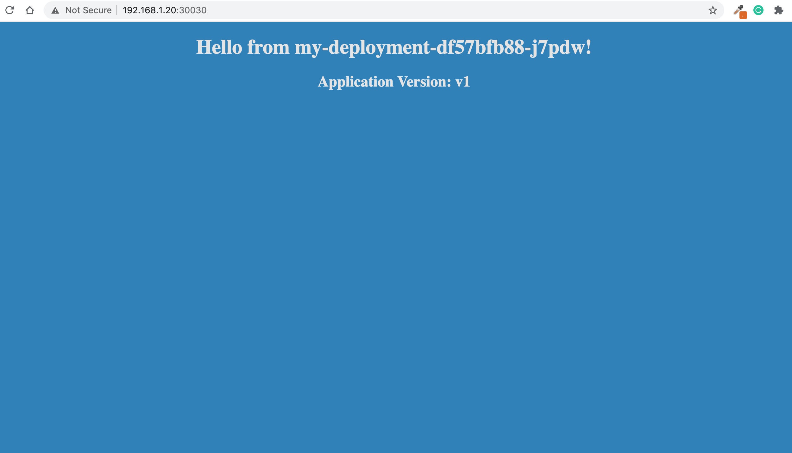
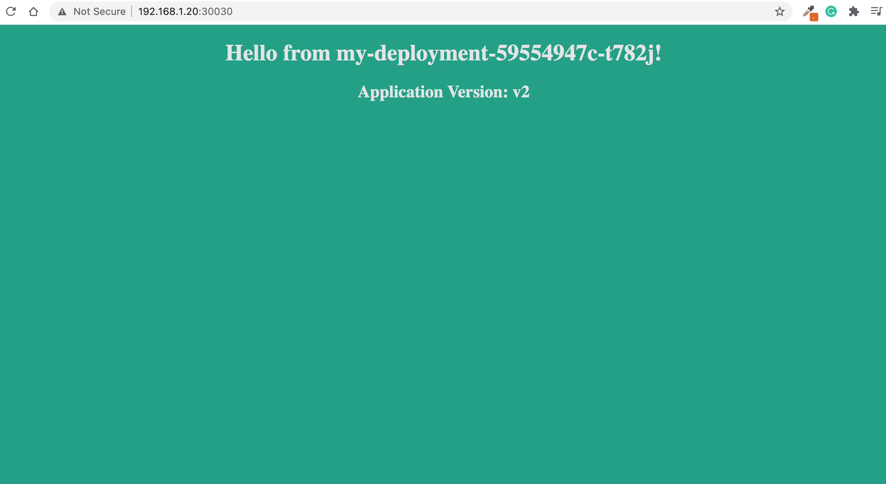

In this exercice, we will work with rolling updates and rollbacks.
#Outcomes
You should be able to do:
- RollingUpdates
- Rollbacks
- Clean up
#Steps
One of the advantages of micro-services is the ability to replace and upgrade a container while continuing to respond to client
requests.
We will use the OnDelete setting that upgrades a container when the predecessor is deleted, then the use the
RollingUpdate feature as well, which begins a rolling update immediately.
1. Create a workspace for Kubernetes
Open a terminal on workstation (Applications > Utilities > Terminal) and run the following commands:
Switch to root user:
```
vagrant ssh master // if you are not connected to the master node
sudo -i
```
```
mkdir ~/updates-lab
cd ~/updates-lab
```
2. Create a namespace for our lab
Namespaces are used to organize our work and keep track of every kubernetes object we create.
That's why we will create a namespace for this lab
```
kubectl create namespace updates-lab
```
Now to check that we successfully created it, run this command
```
kubectl get namespaces
```
Output should be like this:
```
NAME STATUS AGE
default Active 3d9h
kube-node-lease Active 3d9h
kube-public Active 3d9h
kube-system Active 3d9h
updates-lab Active 6s
```
3. Create a deployment
Create an empty file:
```
vi deploy.yaml
```
Press "i" to enter vi insert mode, then paste this:
```
apiVersion: apps/v1
kind: Deployment
metadata:
name: my-deployment
namespace: updates-lab
spec:
replicas: 4
selector:
matchLabels:
app: frontend-app
strategy:
rollingUpdate:
maxSurge: 25%
maxUnavailable: 25%
type: RollingUpdate
template:
metadata:
labels:
app: frontend-app
spec:
containers:
- name: frontend-container
image: kodekloud/webapp-color:v1
ports:
- containerPort: 8080
```
Now, we just need to create it using
```
kubectl apply -f deploy.yaml
```
Then create this NodePort service:
```
vi service.yaml
```
```
apiVersion: v1
kind: Service
metadata:
name: myfrontend-service
namespace: updates-lab
spec:
type: NodePort
ports:
- targetPort: 8080
port: 80
nodePort: 30030
selector:
app: frontend-app
```
Then,
```
kubectl apply -f service.yaml
```
```
service/myfrontend-service created
```
Now, in order to check that our configuration is valid, you can run:
```
kubectl get pods -o wide -n updates-lab
```
Output
```
NAME READY STATUS RESTARTS AGE IP NODE NOMINATED NODE
my-deployment-df57bfb88-5ngj2 1/1 Running 0 7m49s 10.32.0.4 worker-node1 <none>
my-deployment-df57bfb88-694rs 1/1 Running 0 7m49s 10.44.0.6 worker-node-2 <none>
my-deployment-df57bfb88-j7pdw 1/1 Running 0 7m49s 10.32.0.6 worker-node1 <none>
my-deployment-df57bfb88-n5qzz 1/1 Running 0 7m49s 10.44.0.5 worker-node-2 <none>
```
As you can see, our pods are up and running, so get the ip address of any worker nodes, since our deployment is available on both nodes:
```
ip a | grep eth1 | grep inet
```
Then all you need to do, is to change the one below "192.168.1.20" with the ip address that you just found:
```
http://192.168.1.20:30030
```
Copy that link into your browser:

4. Check rolling updates
Let's check the strategy used in this deployment:
```
kubectl describe deployment my-deployment -n updates-lab
```
```
Name: my-deployment
Namespace: updates-lab
CreationTimestamp: Sun, 18 Oct 2020 00:44:34 -0400
Labels: <none>
Annotations: deployment.kubernetes.io/revision: 1
Selector: app=frontend-app
Replicas: 4 desired | 4 updated | 4 total | 4 available | 0 unavailable
StrategyType: RollingUpdate
MinReadySeconds: 0
RollingUpdateStrategy: 25% max unavailable, 25% max surge
Pod Template:
Labels: app=frontend-app
Containers:
frontend-container:
Image: kodekloud/webapp-color:v1
Port: 8080/TCP
Host Port: 0/TCP
Environment: <none>
Mounts: <none>
Volumes: <none>
Conditions:
Type Status Reason
---- ------ ------
Available True MinimumReplicasAvailable
Progressing True NewReplicaSetAvailable
OldReplicaSets: <none>
NewReplicaSet: my-deployment-df57bfb88 (4/4 replicas created)
Events:
Type Reason Age From Message
---- ------ ---- ---- -------
Normal ScalingReplicaSet 26s deployment-controller Scaled up replica set my-deployment-df57bfb88 to 4
```
As you can see, it says RollingUpdate under the Strategy section. Which means if we update this deployment, pods are going to be take down few at a time and replaced with the new pods.
Let's edit the yaml file and check ourselves.
```
kubectl edit deployment my-deployment -n updates-lab
```
Go to the section spec> template > spec > containers > image:
Then update it with this new image:
```
- image: kodekloud/webapp-color:v2
```
Save and quit vi by pressing "ESC" then "ZZ".
Now, let's check how our deployment is updated:
```
kubectl describe deployment my-deployment -n updates-lab
```
Output:
```
Name: my-deployment
Namespace: updates-lab
CreationTimestamp: Sun, 18 Oct 2020 00:44:34 -0400
Labels: <none>
Annotations: deployment.kubernetes.io/revision: 2
Selector: app=frontend-app
Replicas: 4 desired | 3 updated | 5 total | 3 available | 2 unavailable
StrategyType: RollingUpdate
MinReadySeconds: 0
RollingUpdateStrategy: 25% max unavailable, 25% max surge
Pod Template:
Labels: app=frontend-app
Containers:
frontend-container:
Image: kodekloud/webapp-color:v2
Port: 8080/TCP
Host Port: 0/TCP
Environment: <none>
Mounts: <none>
Volumes: <none>
Conditions:
Type Status Reason
---- ------ ------
Available True MinimumReplicasAvailable
Progressing True ReplicaSetUpdated
OldReplicaSets: my-deployment-df57bfb88 (2/2 replicas created)
NewReplicaSet: my-deployment-59554947c (3/3 replicas created)
Events:
Type Reason Age From Message
---- ------ ---- ---- -------
Normal ScalingReplicaSet 4m33s deployment-controller Scaled up replica set my-deployment-df57bfb88 to 4
Normal ScalingReplicaSet 7s deployment-controller Scaled up replica set my-deployment-59554947c to 1
Normal ScalingReplicaSet 7s deployment-controller Scaled down replica set my-deployment-df57bfb88 to 3
Normal ScalingReplicaSet 7s deployment-controller Scaled up replica set my-deployment-59554947c to 2
Normal ScalingReplicaSet 2s deployment-controller Scaled down replica set my-deployment-df57bfb88 to 2
Normal ScalingReplicaSet 2s deployment-controller Scaled up replica set my-deployment-59554947c to 3
```
As you can see in the events section, there is one v2 scaled up, then one v1 pod scaled down, etc...
Let's check our browser again, be refreshing the same old page
```
http://192.168.1.20:30030
```
Copy that link into your browser:

5. Rollout history
In order to check the history of all the rollouts in a specific deployment you can run this command:
```
kubectl rollout history deployment my-deployment -n updates-lab
```
Output:
```
REVISION CHANGE-CAUSE
1 <none>
2 <none>
```
6. Rollback to an earlier Deployment
We can do a Rollback to an earlier Deployment revision if the current state of the Deployment is not stable due to the application code or the configuration.
First, let's check the replicasets in our namespace:
```
kubectl get replicasets -n updates-lab
```
Output
```
NAME DESIRED CURRENT READY AGE
my-deployment-59554947c 4 4 4 4m15s
my-deployment-df57bfb88 0 0 0 8m54s
```
As you can see, we have two replicasets for my-deployment, one having 0 running pods and the newer one have 4 runnings pods.
The newer one represents the new version that we rolled out to. Now let's perform a role back and check again:
```
kubectl rollout undo deployment my-deployment -n updates-lab
```
- Add --to-revision=number to rollback to a specific revision
```
kubectl get replicasets -n updates-lab
```
Output
```
NAME DESIRED CURRENT READY AGE
my-deployment-59554947c 0 0 0 4m37s
my-deployment-df57bfb88 4 4 4 9m16s
```
As you can see, the newer replicaset is now down and the previous state is back and running.
7. Clean up
In order to keep our cluster clean and do not waste ressources, we'll delete the entire namespace that we created earlier.
We can do this by using this command.
```
kubectl delete namespace updates-lab
```
Then we will delete the working space:
```
sudo rm -rf ~/updates-lab
```